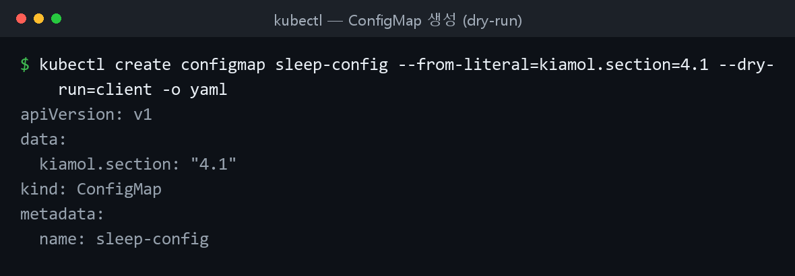
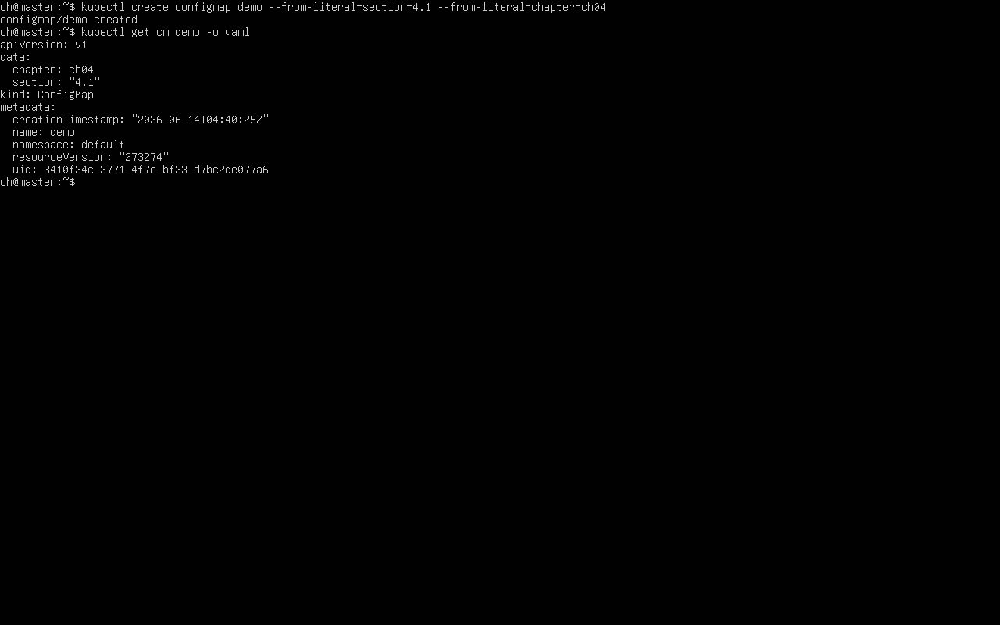
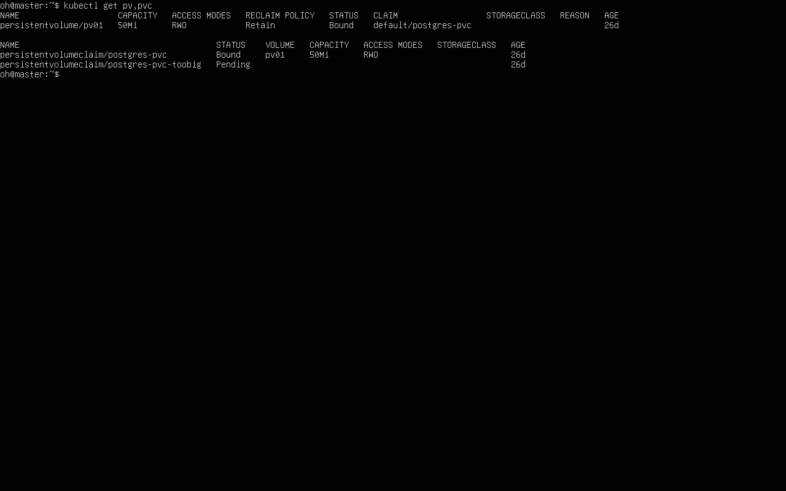
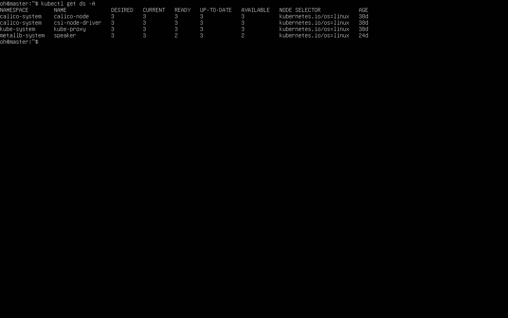

컨피그맵 · 볼륨/퍼시스턴시 · 스케일링
쿠버네티스 중급. 컨피그맵/비밀값으로 설정 주입 → 볼륨·마운트·클레임으로 데이터 보존 → 레플리카셋·디플로이먼트·데몬셋으로 스케일링 순서로 실습했다.
컨피그맵과 비밀값
컨피그맵(ConfigMap) 과 비밀값(Secret) 은 설정을 코드와 분리해 보관하다가 파드로 전달한다. 모든 컨테이너에는 기본 환경 변수가 있다.
cd ch04
kubectl apply -f sleep/sleep.yaml # 설정값 없이 sleep 파드 실행
kubectl wait --for=condition=Ready pod -l app=sleep
kubectl exec deploy/sleep -- printenv HOSTNAME KIAMOL_CHAPTER # 기본 환경 변수 확인
환경 변수로 주입
env 직접 지정, valueFrom.configMapKeyRef(특정 항목), envFrom.configMapRef(전체)로 끌어올 수 있다. 컨피그맵은 리터럴·env 파일·YAML로 만든다.
kubectl create configmap sleep-config-literal --from-literal=kiamol.section='4.1' # 리터럴로 생성
kubectl describe cm sleep-config-literal
kubectl apply -f sleep/sleep-with-configMap-env.yaml # 참조하도록 파드 재배치
kubectl exec deploy/sleep -- sh -c 'printenv | grep "^KIAMOL"' # 주입 확인
kubectl create configmap sleep-config-env-file --from-env-file=sleep/ch04.env # env 파일로도 생성

▲
kubectl create configmap ... --dry-run=client -o yaml 로 컨피그맵을 생성해 본 결과(로컬 실행). data 아래에 키-값으로 설정이 담긴다.

▲ 직접 구축한 클러스터에서
kubectl create configmap 후 get cm -o yaml — data 에 키-값 설정이 담긴다.
볼륨 마운트로 설정 파일 주입
컨피그맵을 파일로도 주입할 수 있다. 컨피그맵은 디렉터리, 각 항목은 파일이 된다.
apiVersion: v1
kind: ConfigMap
metadata:
name: todo-web-config-dev
data:
config.json: |- # 키 이름이 곧 파일 이름이 된다
{
"ConfigController": {
"Enabled": true
}
}
파드는 volumeMounts + volumes 로 마운트한다. readOnly: true 로 읽기 전용, items 로 특정 항목만 마운트할 수 있다.
spec:
containers:
- name: web
image: kiamol/ch04-todo-list
volumeMounts:
- name: config
mountPath: "/app/config" # 볼륨이 마운트될 경로
readOnly: true
volumes:
- name: config # 볼륨 마운트 이름과 일치
configMap:
name: todo-web-config-dev
kubectl apply -f todo-list/configMaps/todo-web-config-dev.yaml
kubectl exec deploy/todo-web -- sh -c 'ls -l /app/config/*.json'
# 읽기 전용 검증 - 실패가 정상이다
kubectl exec deploy/todo-web -- sh -c 'echo ch04 >> /app/config/config.json'
볼륨 마운트로 주입한 컨피그맵의 갱신은 지연된다
볼륨 마운트로 주입한 설정 파일은 반영까지 시간이 걸린다(실습 sleep 120). 환경 변수로 주입한 값은 파드를 재배포해야 바뀐다.
읽기 전용 쓰기 실패
(읽기 전용 볼륨에 echo ... >> 시 권한 오류가 나는 화면 캡처)
볼륨·마운트·클레임
컨테이너 파일시스템의 기록 레이어는 컨테이너 생애주기를 따른다. 컨테이너가 재시작되면 기록한 파일이 사라진다.
cd ch05
kubectl apply -f sleep/sleep.yaml
kubectl exec deploy/sleep -- sh -c 'echo ch05 > /file.txt; ls /*.txt' # 파일 생성
kubectl exec -it deploy/sleep -- killall5 # 컨테이너 재시작
kubectl exec deploy/sleep -- ls /*.txt # 파일이 사라짐
emptyDir와 hostPath
emptyDir는 파드에 딸린 빈 디렉터리로, 같은 파드 안에서 컨테이너가 교체돼도 유지된다(파드가 다른 노드로 옮겨가면 소멸).
spec:
containers:
- name: sleep
image: kiamol/ch03-sleep
volumeMounts:
- name: data
mountPath: /data
volumes:
- name: data
emptyDir: {} # 유형은 공디렉터리
kubectl apply -f sleep/sleep-with-emptyDir.yaml
kubectl exec deploy/sleep -- sh -c 'echo ch05 > /data/file.txt; ls /data'
kubectl exec deploy/sleep -- killall5
kubectl exec deploy/sleep -- cat /data/file.txt # 컨테이너가 바뀌어도 유지됨
hostPath는 노드의 디렉터리를 가리킨다. type: DirectoryOrCreate 는 없으면 생성한다.
volumes:
- name: cache-volume
hostPath:
path: /volumes/nginx/cache
type: DirectoryOrCreate
hostPath 의 path: / 는 보안 위험
노드 루트(path: /, type: Directory)를 통째로 마운트하면 컨테이너가 노드 파일시스템 전체에 접근한다. 필요하면 subPath 로 범위를 좁힌다.
kubectl apply -f pi/nginx-with-hostPath.yaml
kubectl exec deploy/pi-proxy -- ls -l /data/nginx/cache
영구볼륨(PV)과 영구볼륨클레임(PVC)
클러스터 전체에서 접근 가능한 스토리지는 PV(클러스터가 제공)와 PVC(애플리케이션이 요청)로 쓴다.
apiVersion: v1
kind: PersistentVolume
metadata:
name: pv01
spec:
capacity:
storage: 50Mi # 볼륨 용량
accessModes:
- ReadWriteOnce # 파드 하나에서만 사용 가능
nfs: # NFS 등 분산 스토리지 사용
server: nfs.my.network
path: "/kubernetes-volumes"
---
apiVersion: v1
kind: PersistentVolumeClaim
metadata:
name: postgres-pvc
spec:
accessModes:
- ReadWriteOnce
resources:
requests:
storage: 40Mi # 요청하는 용량
storageClassName: "" # 스토리지 유형 미지정
kubectl apply -f todo-list/persistentVolume.yaml
kubectl get pv
kubectl apply -f todo-list/postgres-persistentVolumeClaim.yaml # 조건 맞으면 Bound
kubectl get pvc
kubectl apply -f todo-list/postgres-persistentVolumeClaim-too-big.yaml # 맞는 PV 없으면 Pending
kubectl get pvc
PVC를 볼륨으로 쓰는 파드(persistentVolumeClaim.claimName)에 PostgreSQL을 올리면 DB 파드를 삭제해도 데이터가 유지된다.
kubectl apply -f todo-list/postgres/
kubectl delete pod -l app=todo-db # 파드를 지워도
kubectl exec deploy/sleep -- ls -l /node-root/volumes/pv01/pg_wal # 데이터는 남아 있다

▲
kubectl get pv,pvc — postgres-pvc 는 pv01에 Bound, 용량이 큰 postgres-pvc-toobig 는 맞는 PV가 없어 Pending.
스케일링
컨트롤러는 파드 템플릿으로 동일한 파드의 레플리카를 여러 개 만든다. 스케일링은 파드를 늘리는 것이다.
레플리카셋(ReplicaSet)은 파드를 직접 관리한다. 디플로이먼트는 그 위에 관리 계층을 얹어, 업데이트 시 새 레플리카셋을 만들고 기존 레플리카셋을 0으로 줄여 롤아웃/롤백을 처리한다.
apiVersion: apps/v1
kind: ReplicaSet
metadata:
name: whoami-web
spec:
replicas: 1
selector:
matchLabels:
app: whoami-web
template: # 일반적인 파드 정의가 이어진다
metadata:
labels:
app: whoami-web
cd ch06
kubectl apply -f whoami/
kubectl get replicaset whoami-web
kubectl delete pods -l app=whoami-web # 레플리카셋이 대체 파드 생성
kubectl apply -f whoami/update/whoami-replicas-3.yaml # 레플리카 3으로 증가
# 서비스로 여러 번 요청해 로드밸런싱 확인
kubectl exec deploy/sleep -- sh -c 'for i in 1 2 3; do curl -w "\n" -s http://whoami-web:8088; done;'
로드밸런싱 응답
(같은 서비스에 여러 번 요청했을 때 서로 다른 파드 호스트 이름이 응답하는 출력 캡처)
kubectl scale vs apply
kubectl scale 은 즉석 변경이며, 이후 apply 하면 매니페스트 값으로 원복된다. --show-labels 로 파드와 레플리카셋이 pod-template-hash 로 묶임을 확인한다.
kubectl get rs -l app=pi-web
kubectl scale --replicas=4 deploy/pi-web # 즉석 스케일
kubectl apply -f pi/web/update/web-replicas-3.yaml # 매니페스트 값(3)으로 원복
kubectl get rs -l app=pi-web --show-labels
데몬셋
데몬셋(DaemonSet)은 모든 노드(또는 셀렉터 일치 노드)에서 노드당 파드 하나를 동작시킨다. 로그·지표 수집 같은 인프라성 작업에 적합하다.
apiVersion: apps/v1
kind: DaemonSet
metadata:
name: pi-proxy
spec:
selector:
matchLabels:
app: pi-proxy
template:
metadata:
labels:
app: pi-proxy
spec:
# ... 파드 정의 ...
nodeSelector: # 특정 노드에서만 실행
kiamol: ch06
kubectl apply -f pi/proxy/daemonset/nginx-ds.yaml
kubectl delete deploy pi-proxy # 디플로이먼트를 데몬셋으로 교체
kubectl get daemonset pi-proxy
kubectl delete ds pi-proxy --cascade=false # 관리 대상 파드는 남기고 데몬셋만 삭제

▲
kubectl get ds -A — calico-node·kube-proxy 등 데몬셋이 노드마다 하나씩(DESIRED=CURRENT=READY) 동작.
막혔던 점
- 컨피그맵 수정이 반영 안 됨 → 볼륨 마운트는 지연 반영(잠시 대기), 환경 변수는 파드 재배포(
apply) 필요. - 읽기 전용 볼륨 쓰기 실패 →
readOnly: true의 의도된 동작. 실패가 정상. - 재시작/파드 삭제 후 파일 소멸 → 컨테이너 재시작은 emptyDir, 파드·노드 교체는 PV/PVC로 보존.
- PVC가 Pending → 요청 용량·accessModes에 맞는 PV가 없을 때. 용량을 PV capacity 이하로 맞춤. too-big PVC의 Pending은 정상.
- PV 디렉터리 없어 DB 실패 → hostPath sleep 파드로
mkdir -p /node-root/volumes/pv01선행 후 배치. - scale이 apply 후 원복 / 데몬셋 파드 0개 → 영구 변경은 매니페스트 replicas 수정. 데몬셋은
kubectl label node ... kiamol=ch06로 셀렉터 일치.